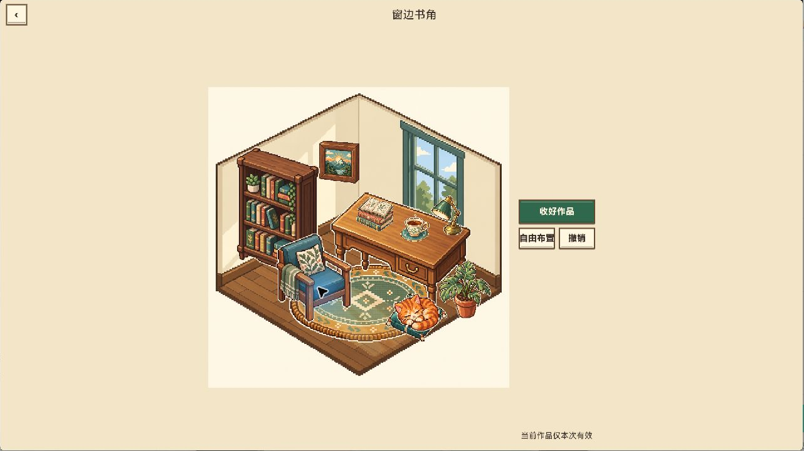
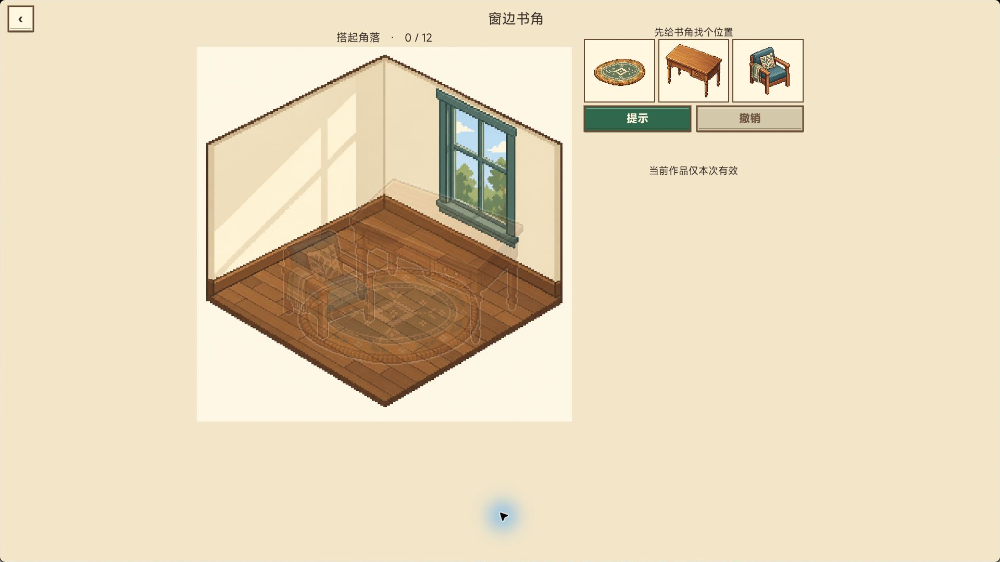
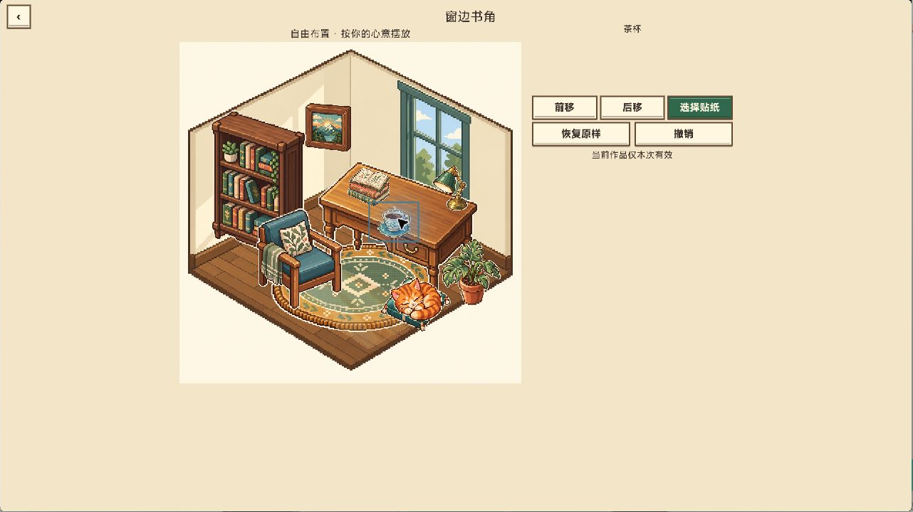

先有完成目标，再开放表达
引导摆放让玩家理解场景结构，完成后转入自由布置。两种模式服务不同动机，让追求还原与想要重新设计的玩家都能继续操作。
TAPTAP MAKER / 个人 AI 游戏实践
把家具、小物和猫咪一张张贴进像素房间，完成后继续调整自己的小风景。从有目标的摆放过渡到自由布置，兼顾完成感与个人表达。
GAMEPLAY / 核心体验
从贴纸托盘中选择物件，拖向房间里的目标位置，靠近时获得磁吸预览，松手完成摆放。每关十二张贴纸按三个阶段逐步开放，完成场景后可以自由调整位置和前后层级。当前从首关窗边书角扩展到十个房间、一百二十张不同贴纸的开发版。
IN-GAME CAPTURES / 游戏画面
以下为像素首关阶段的原生运行截图，裁去窗口标题栏。十关新版的离线资源合成图未作为实机展示。



DESIGN / 规则与取舍
引导摆放让玩家理解场景结构，完成后转入自由布置。两种模式服务不同动机，让追求还原与想要重新设计的玩家都能继续操作。
每关按 4、5、3 张分阶段开放贴纸，托盘每批最多呈现三张，避免一次面对全部物件。透明区域命中、磁吸预览和错放后可重拿共同降低拖放理解成本。
新版探索释放膜、镊子与抬高手指的拖拽表现，并分开免费落点提示和原图入口。交互迭代围绕遮挡、落点辨识和实体贴纸的触感展开。
十关开发版分别保存进度并兼容旧首关存档。自由布置支持前后层级、恢复与二十步撤销，场景内容和玩家调整都能得到保留。
MY PRACTICE / 项目推进
通过 AI 协作从首关验证推进到像素场景和连续关卡，统筹原创场景、逐项贴纸素材与统一视觉方向。围绕贴纸拖放、磁吸判定、层级遮挡和作品保存持续迭代，并按反馈调整首页信息层次及提示方式。美术为 AI 素材生成与整理，不将其写作人工逐像素绘制。
TapTap 已有首关公开测试入口。十关一百二十贴纸、释放膜与镊子等为后续开发迭代，正式上线和新素材实机验收尚未完成；广告奖励尚未接通。下方真实截图来自像素首关阶段，早于十关新版。
TAPTAP / 游戏入口
TapTap 页面提供公开介绍与平台支持的试玩入口。平台当前可玩的内容以该页面为准，本页同时记录开发中的后续迭代。